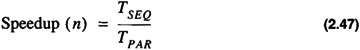

by Alan Parker
CRC Press, CRC Press LLC
ISBN: 0849371716 Pub Date: 08/01/93
|
|
Algorithms and Data Structures in C++
by Alan Parker CRC Press, CRC Press LLC ISBN: 0849371716 Pub Date: 08/01/93 |
| Previous | Table of Contents | Next |
Definition 2.16
A cycle is a path from a vertex to itself which does not repeat any vertices except the first and the last.
A graph containing no cycles is said to be acyclic. An example of cyclic and acyclic graphs is shown in Figure 2.9.
Figure 2.9 Cyclic and Acyclic Graphs
Notice for the directed cyclic graph in Figure 2.9 that the double arrow notations between nodes v2 and v4 indicate the presence of two edges (v2, v4) and (v4, v2). In this case it is these edges which form the cycle.
Definition 2.17
A tree is an acyclic connected graph.

Examples of trees are shown in Figure 2.10.
Definition 2.18
An edge, e, in a connected graph, G = (V, E), is a bridge if G′ = (V, E′) is disconnected where
Figure 2.10 Trees
If the edge, e, is removed, the graph, G, is divided into two separate connected graphs. Notice that every edge in a tree is a bridge.
Definition 2.19
A planar graph is a graph that can be drawn in the plane without any edges intersecting.
An example of a planar graph is shown in Figure 2.11. Notice that it is possible to draw the graph in the plane with edges that cross although it is still planar.
Definition 2.20
The transitive closure of a directed graph, G = (V1, E1) is a graph, H = (V2, E2), such that,
Figure 2.11 Planar Graph
where f returns a set of edges. The set of edges is as follows:
Thus in Eq. 2.45, . Transitive closure is illustrated in Figure 2.12.
Figure 2.12 Transitive Closure of a Graph
This section presents some fundamental properties and definitions used in parallel processing.
Definition 2.21
The speedup of an algorithm executed using n parallel processors is the ratio of the time for execution on a sequential machine, TSEQ, to the time on the parallel machine, TPAR:

If an algorithm can be completely decomposed into n parallelizable units without loss of efficiency then the Speedup obtained is
If however, only a fraction, f, of the algorithm is parallelizable then the speedup obtained is
which yields
This is known as Amdahl's Law. The ratio shows that even with an infinite amount of computing power an algorithm with a sequential component can only achieve the speedup in Eq. 2.50. If an algorithm is 50% sequential then the maximum speedup achievable is 2. While this may be a strong argument against the merits of parallel processing there are many important problems which have almost no sequential components.
Definition 2.22
The efficiency of an algorithm executing on n processors is defined as the ratio of the speedup to the number of processors:

Using Amdahl's law
with
Pipelining is a means to achieve speedup for an algorithm by dividing the algorithm into stages. Each stage is to be executed in the same amount of time. The flow is divided into k distinct stages. The output of the jth stage becomes the input to the (j + 1) th stage. Pipelining is illustrated in Figure 2.13. As seen in the figure the first output is ready after four time steps Each subsequent output is ready after one additional time step. Pipelining becomes efficient when more than one output is required. For many algorithms it may not be possible to subdivide the task into k equal stages to create the pipeline. When this is the case a performance hit will be taken in generating the first output as illustrated in Figure 2.14.
Figure 2.13 A Four Stage Pipeline
)
Figure 2.14 Pipelining
In the figure TSEQ is the time for the algorithm to execute sequentially. TPS is the time for each pipeline stage to execute. TPIPE is the time to flow through the pipe. The calculation of the time complexity sequence to process n inputs yields
for a k-stage pipe. It follows that TPIPE (n) < TSEQ (n) when
The speedup for pipelining is
Example 2.6 Order
which yields
In some applications it may not be possible to keep the pipeline full at all times. This can occur when there are dependencies on the output. This is illustrated in Example 2.7. For this case let us assume that the addition/subtraction operation has been set up as a pipeline. The first statement in the pseudo-code will cause the inputs x and 3 to be input to the pipeline for subtraction. After the first stage of the pipeline is complete, however, the next operation is unknown. In this case, the result of the first statement must be established. To determine the next operation the first operation must be allowed to proceed through the pipe. After its completion the next operation will be determined. This process is referred to flushing the pipe. The speedup obtained with flushing is demonstrated in Example 2.8.
Example 2.7 Output Dependency PseudoCode
Example 2.8 Pipelining
There are a number of common topologies used in parallel processing. Algorithms are increasingly being developed for the parallel processing environment. Many of these topologies are widely used and have been studied in great detail. The topologies presented here are
| Previous | Table of Contents | Next |
){kind=link}
){kind=link}
){kind=link}
){kind=link}
){kind=link}
){kind=link}
){kind=link}
){kind=link}